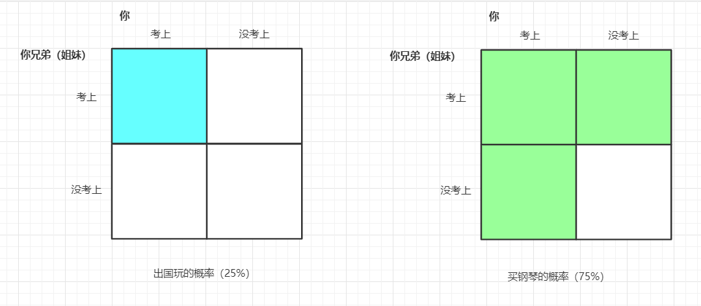
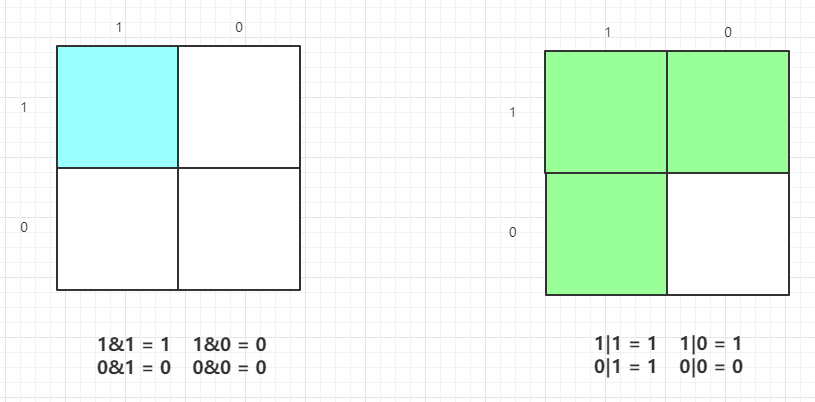
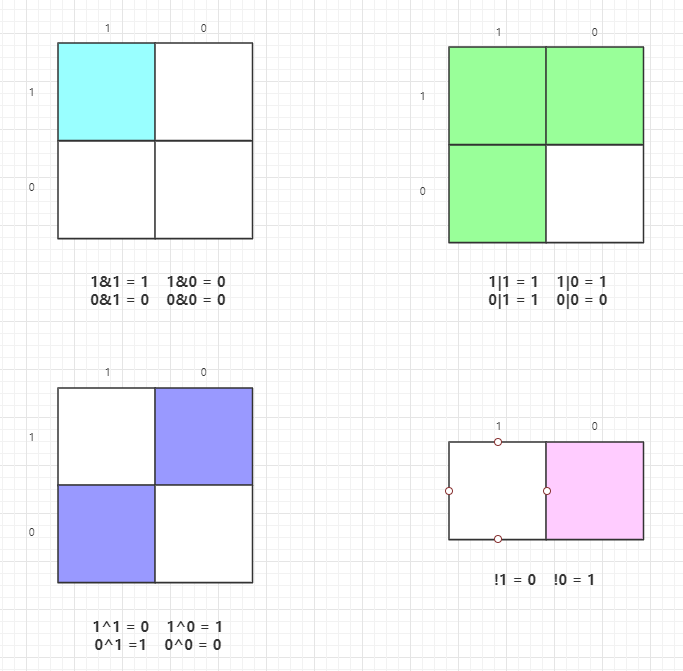
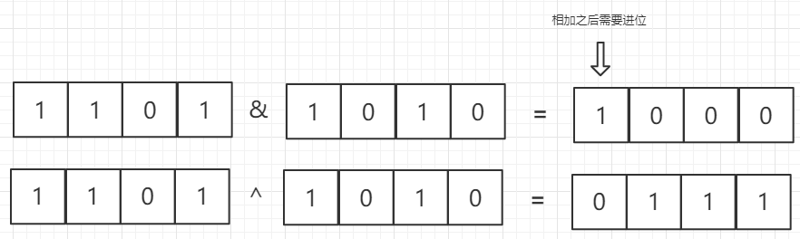
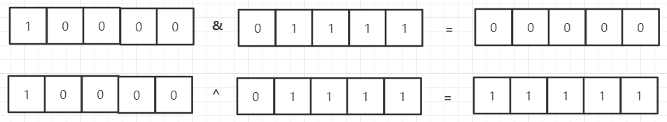
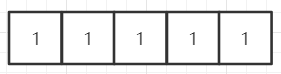
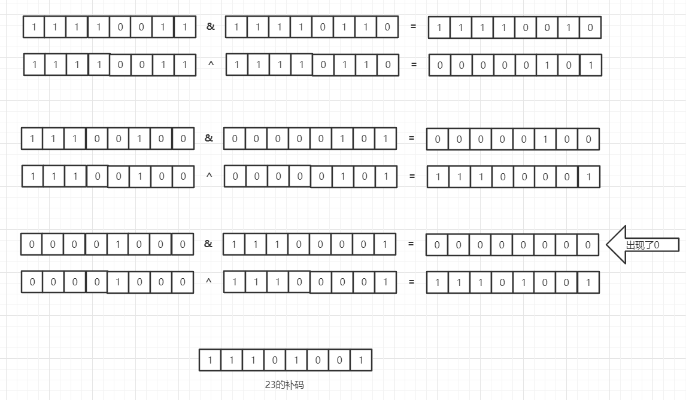

问题(A + B 问题)
给出两个整数 a 和 b , 求他们的和。
说明
a和b都是32位整数么？
* 是的
我可以使用位运算符么？
* 当然可以
举例
例 1:
输入: a = 1, b = 2
输出: 3
解释: 返回a + b的结果.
例 2:
输入: a = -1, b = 1
输出: 0
解释: 返回a + b的结果.
挑战
显然你可以直接 return a + b，但是你是否可以挑战一下不这样做？（不使用+等算数运算符）
开始解题
什么是与运算和或运算 ？
先讲个故事，假如你有一个亲兄弟或者姐妹，你们两个人要一起参加高考，你们的父亲答应你们如果你与他（她）都考上清华就带你们去给国外玩。而你们的母亲答应只要你们两个中有一个考上清华，就给你们买架钢琴。但是你们只能在父母的两个承诺中选择一个，而你们毫不犹豫的选择了母亲。因为母亲的承诺实现起来的概率大。母亲的运算方法就是或运算！而父亲的是与运算。 如果还不明显，看一下这个图：  换成二进制就是: 
这就是二进制与运算及或运算的原理
而所有计算机的数据都是以二进制存储的，只有0和1，不存在其他的数字，所以让我们看看加法是怎么实现的。
10进制中，我们都知道超9要进位，同样在计算机中超1就进位。但是就像你看到的位于左上角的与运算结果还是1，是不进位的。
所以，与预算及或运算都不进位！
我们来看看其他的逻辑运算符（与，或，异或，非）：

由此可以看到，与运算可以代替进位，异或运算可以代替不进位的加法。所以我们就解决了，例如13+10：

与运算结果整体左移一位，因为两个结果都没有出现0，所以重复上面的操作

虽然得到了结果，但是并不是我们要的结果，这是为什么？

两个字：补码！
计算机的三种码
原码，反码，补码。因为原码在计算机中存储起来不如补码方便，所以在计算机里都是存储的补码，而并非原码。 从原码到补码的转变的方法是：原码取反得反码，反码加一得补码
那么上面的13+10也就变成了： 
算法代码
C++
class Solution {
public:
/*
* @param : An integer
* @param : An integer
* @return: The sum of a and b
*/
int aplusb(int a, int b) {
// write your code here
if(a==0)
return b;
if(b==0)
return a;
int x1 = a ^ b;
int x2 = (a & b) << 1;
return aplusb(x1, x2);
}
Python
class Solution:
"""
@param a: An integer
@param b: An integer
@return: The sum of a and b
"""
def aplusb(self, a, b):
# write your code here
import ctypes
a = ctypes.c_int32(a).value
b = ctypes.c_int32(b).value
while b != 0:
carry = ctypes.c_int32(a & b).value
a = ctypes.c_int32(a ^ b).value
b = ctypes.c_int32(carry << 1).value
return a